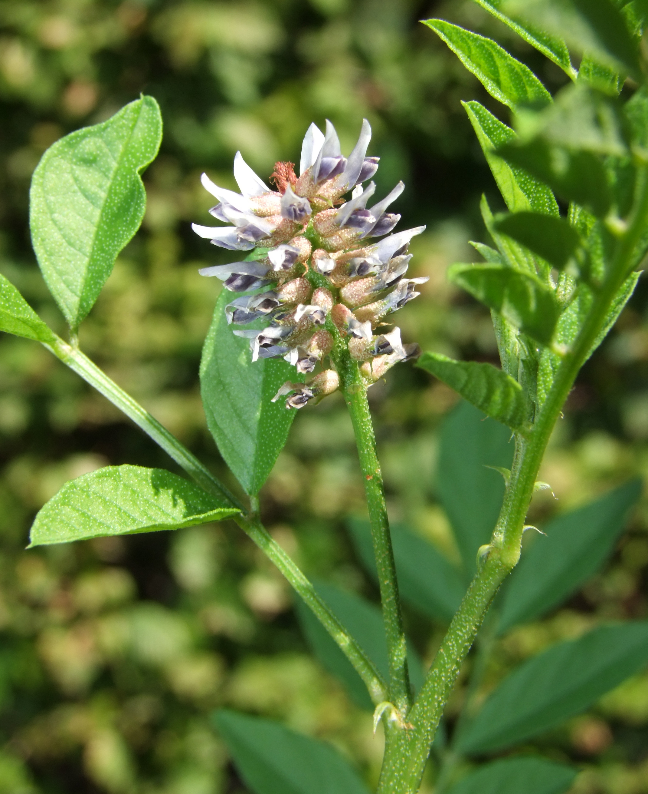

Glycyrrhiza glabra
| common name | licorice | |
| en español | regaliz | |
| name in Āyurveda | yaṣṭimadhu (यष्टिमधु) | |
| name in TCM | gān cǎo (甘草) | |
| plant family | Fabaceae (legume/pea/bean) | |
| parts used | dried root |
 from Wikimedia Commons by Pharaoh han - Own work, CC BY-SA 3.0
{kind=link}
observations/description
dried roots
- small pieces ranging from light beige to dark brown, some a pale yellow/yellow-green color, a bit reminiscent of oats/farro
- very pleasant sweet aroma with notes of licorice
- intensely sweet taste with notes of licorice
"Liquorice", Wikipedia
- pinnate leaves
- flowers are purple to pale whitish blue, produced in a loose inflorescence
- fruit is an oblong pod
distribution/conservation status
"Liquorice", Wikipedia
- native to West Asia, North Africa, and Southern Europe
- considered a 'least concern' species
primary actions
The Yoga of Herbs, p. 127-8
- demulcent, expectorant, tonic, rejuvenative, laxative, sedative, emetic
The Modern Herbal Dispensatory, p. 260-1
- adaptogen, anti-inflammatory, antitussive, demulcent (mucilant), hypertensive
The New Age Herbalist, p. 77, 80
- harmonizer, anti-inflamamtory, adrenal tonic, gentle laxative, antacid, antispasmodic, cholagogue, expectorant, febrifuge, antibacterial, estrogenic
notes from class, 19 May 2025
- adaptogen, anti-inflammatory, antibacterial, antiviral, antihyperglycemic, antispasmodic, antitussive, demulcent, expectorant, immunomodulant, immunostimulant, vulnerary
system affinities
digestive, respiratory, endocrine
primary uses
The Yoga of Herbs, p. 127-8
- effective expectorant; liquifies mucus and facilitates its discharge from the body (cleanses the lungs of kapha)
- good emetic in large doses (cleanses the stomach of kapha)
- mild laxative that soothes/tones the mucus membranes, relieving muscle spasms and reducing inflammation
- aids with ulcers, hyperacidity, abdominal pain
- pleasant taste aids with masking unpleasant flavors of other herbs and helps to harmonize their properties by countering heat and dryness and reducing toxicity
- with fresh ginger for cold and respiratory afflictions
- colds, cough, bronchitis, sore throat, laryngitis
- with ginger and cardamom for the teeth
- restorative and rejuvenative
- sattvic: calms the mind and nurtures the spirit
- nourishes the brain, increases cranial and cerebrospinal fluid, promotes contentment and harmony
- improves voice, vision, hair, and complexion and gives strength
- also indicated for painful urination
The Modern Herbal Dispensatory, p. 260-1
- strong mucosal anti-inflammatory that can be used for gastric, esophageal, urinary, and respiratory inflammation
- as a decoction or syrup, eases dry coughs and sore throats
- helps stabilize blood sugar levels and treats both hypoglycemia and diabetes
- used frequently in low levels in TCM formulations
The New Age Herbalist, p. 77, 80
- one of the most commonly used harmonizers in formulation, masks the taste of many bitter components
- glycyrrhizin is 50 times sweeter than sugar
- has potent anti-inflammatory, antiarthritic, and antiallergic effects similar to cortisone
- may be because glycyrrhizin yields glycyrrhetinic acid, which has a similar structure to hormone of the adrenal cortex
- remedy for the digestive system
- gentle laxative
- lowers stomach acid levels; relieves heartburn
- demulcent action treats ulcers by spreading a protective gel over the stomach walls
- eases spasms of the large intestine
- increases flow of bile
- lowers blood cholesterol
- neutralizes many toxins such as those of diphtheria and tetanus
- reduces irration of the throat (similar to codeine), yet also acts as an expectorant
- reduces fevers; glycyrrhetinic acid similar to aspirin
notes from class, 19 May 2025
- sweet, improves flavor of bitter/unpleasant herbs and helps moisten formulation
- relaxant, restorative, softens tissues
- great for hot and dry conditions
- harmonizer herb in many TCM formulations
energetics
The Yoga of Herbs, p. 127-8
- reduces vāta, pitta; increases kapha if used long-term
- sweet/bitter taste - sweet post-digestive effect
- cooling
The Modern Herbal Dispensatory, p. 260-1
- cooling, moistening
notes from class, 19 May 2025
- sweet, moistening
pharmacology
The New Age Herbalist, p. 77, 80
- glycyrrhizin, flavonoids, isoflavonoids, chalcones, coumarins, triterpenoid saponins, sterols, starch, sugars (up to 14%), amino acids, amines (asparagine, betaine, choline), gums, wax, volatile oil
contraindications/pharmaceutical interactions/warnings
The Yoga of Herbs, p. 127-8
- high kapha
- increases water around the heart; contraindicated for edema, hypertension
- inhibits absorption of calcium and potassium; contraindicated for osteoporosis
The Modern Herbal Dispensatory, p. 260-1
- should be avoided in cases of high blood pressure or when taking digitalis
- causes retention of water and sodium and excretion of potassium, which can cause
- edema
- hypertension
- heart palpitations
- slowing of the heartbeat
- can take a potassium supplement to help counteract
- vertigo and headaches are early symptoms of overuse of licorice
- side effects are more likely to occur when using licorice extracts or licorice-derived drugs than taking whole licorice root
- deglycyrrhizinated licorice (DGL) is free of adverse effects
- use in pregnancy only under the supervision of a qualified herbalist/medical practitioner
- small amounts in formulations (e.g., as a harmonizer) are okay
The New Age Herbalist, p. 77, 80
- action is similar to hormone ACTH, which causes retention of sodium and potassium and rise in blood pressure
- asparagine acts to counter this tendency, but licorice should be avoided in large doses or where there is high blood pressure, kidney disease, or pregnancy
Herbal Materia Medica, p. 19
- can occasion sodium retention
notes from class, 19 May 2025
- contraindicated for high blood pressure
- should not be used for more than 6 weeks at a time before a break
- in a regular dose, not a harmonizer dose as in TCM (as long as high blood pressure not an issue)
preparations
The Modern Herbal Dispensatory, p. 260-1
- weak decoction
- dried root, 15 g: 1 L
- tincture
- dried root, 1:5, 40% alcohol
- glycerite
- dried root, 1:5
- powder
Herbal Materia Medica, p. 19
- strong decoction
- dried root, 1:32
- tincture
- (dried) root, 1:5, 50% alcohol
The Yoga of Herbs, p. 78, 80, 127-8
- decoction
- dried root, 1:16, reduce to 1/4 original amount
- milk decoction
- dried root, 1:8:32, reduce to 1/5 original amount
- powder
- ghee
dosage
The Modern Herbal Dispensatory, p. 260-1
- weak decoction: 4-6 oz, 3/day
- tincture: 1-5 mL, 1-4/day
- glycerite: 2.5-10 mL, 1-4/day
- powder: 500-1000 mg, up to 4/day
Herbal Materia Medica, p. 19
- strong decoction: 1-3 oz, up to 3/day
- tincture: 30-60 drops, up to 3/day
The Yoga of Herbs, p. 92, 127-8
- decoction: 2 oz, 3/day
- milk decoction: 2 oz, 3/day
- powder: 250-500 mg, 3/day
extra information
personal experiences/simples
decoction (0.25 oz: 16+ oz, 30 minutes -> 8+ oz), dried root
- faint aroma more or less throuhghout decoction process
- somewhat similar to the burdock/dandelion root taste, faintly of licorice/anise
- bitter up front (and throughout), then intensely sweet
- aftertaste is of anise, very pleasant
- drinking cold water after is equisite; the wash of anise flavor delightful
- thick, syrupy mouthfeel
tincture (1:5, 40% alcohol, 4 weeks), dried root
- deep, reddish brown color
- light aroma, alcohol covering some of the notes for me, somewhat smells of fresh snow peas, faintly of anise
- at first, quite vegetal like the snow/snap peas; then an intense sweetness and anise flavor expands as if from the center of the mouth cavity outwards
- like the decoction, drinking cold water afterwards seemingly releases more anise flavor and sweetness
- quite a euphoric experience
- quite relaxing, feeling a significant nervine/sedative effect while at the same time feeling a bit ungrounded/delirious
- after a while, i feel quite calm and present; adaptogenic effect much more pronounced in the tincture than in the decoction
witchcraft
The Witch's Encyclopedia of Magical Plants, p. 189-90
- Egyptians place licorice in tombs to aid the soul's transition to the afterlife
- reputation as an aphrodisiac
- used in love charms and to keep a lover faithful in Europe
- in hoodoo, used to dominate another person
- elements: water
- astrological influence: jupiter, mercury, venus
recipes
sources
Easely, Thomas and Steven Horne. The Modern Herbal Dispensatory (2016)
Frawley, David and Vasant Lad. The Yoga of Herbs: An Ayurvedic Guide to Herbal Medicine (1986)
Goldberg Blackthorn, Samantha. Ace of Cups Herbal Medicine and Botanical Magic Herbal School (2024)
Kynes, Sandra. The Witch's Encyclopedia of Magical Plants (2024)
"Liquorice" on Wikipedia. Retrieved 6 May 2025.
Mabey, Richard et al. The New Age Herbalist (1988)
Moore, Michael. Herbal Materia Medica, Fifth Edition (1995)